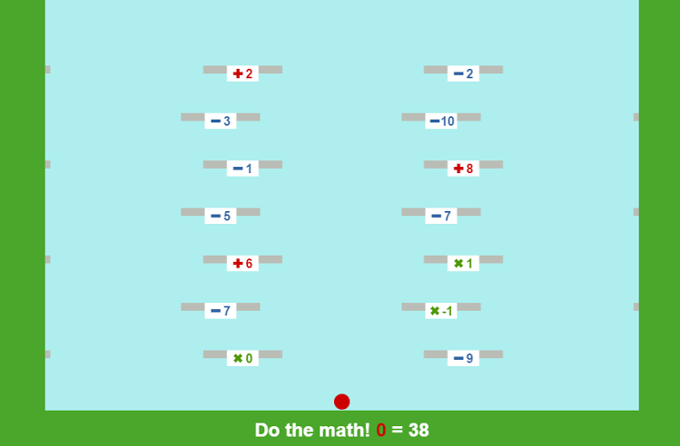

Platformer
Modify the Platformer game with Elm!
Platformer

Copy all of the following code into the Elm simulator here and follow the instructions commented within the code to begin modifying the platformer game! Click here for a demonstration of the game!
import Color exposing (..)
import Graphics.Collage exposing (..)
import Graphics.Element exposing (..)
import Keyboard
import Time exposing (..)
import Text exposing (..)
import Window
import Touch exposing (..)
-- STUFF YOU GET TO CUSTOMIZE!
targetScore = 38 -- Set your target score right here, the number next to this message!
frameColor = rgb 74 167 43 -- Changes the color of the frame!
character = -- Customize your character!
group [ circle 10 |> filled red ]
backdrop w h t = -- Here you can change what the background of the game is.
-- 'w' is for width, 'h' is for height, 't' is for time!
group [rect w h
|> filled (rgb 174 238 238)
]
winBanner winPos t = -- Here you can change what the victory banner looks like.
group [rect 900 120
|> filled (rgb 74 167 43),
plus red
|> scale 5
|> moveX 300,
rect 60 20
|> filled blue
|> moveX -300,
text (Text.style (victoryStyle white) (fromString "DAT MATH THO"))
-- Make sure the victory text is at the bottom so it is on top of everything!
]
bannerPosition = 0 -- Changes the position of the banner. Make negative to go down, positive to go up.
-- First two numbers are x and y coordinates, stating where the platforms start at the
-- beginning of the game. The third number is the speed, positive to the right,
-- negative to the left.
platforms = [ ((280,60),1), ((0,60),1), ((-280,60),1),
((280,120),-1), ((0,120),-1), ((-280,120),-1),
((280,180),1), ((0,180),1), ((-280,180),1),
((280,240),-1), ((0,240),-1), ((-280,240),-1),
((280,300),1), ((0,300),1), ((-280,300),1),
((280,360),-1), ((0,360),-1), ((-280,360),-1),
((280,420),1), ((0,420),1), ((-280,420),1)
]
-- 'Add' -> Addition, 'Sub' -> Subtraction,
-- 'Mul' -> Multiplication, 'Div' -> Subtraction
operations = [ (Add,8),(Sub,9),(Mul,0),
(Mul,-1),(Sub,7),(Add,0),
(Add,3),(Mul,1),(Add,6),
(Sub,7),(Sub,5),(Div,2),
(Add,4),(Add,8),(Sub,1),
(Sub,10),(Sub,3),(Mul,2),
(Add,10),(Sub,2),(Add,2)]
-- VERY IMPORTANT, Look up and make sure the number of operations matches
-- the number of platforms, or you just may run into a problem.
horizontalVelocity = 3 -- How fast you can move side to side
jumpPower = 6 -- How much leg day have you done?
startScore = 0 -- Maybe you don't want to start with 0?
width = 425
-- Beyond here is all the messy code we came up with! ENTER AT YOUR OWN RISK !!
--
--
--
--
--
--
--
--
--
--
--
--
--
--
--
--
--
--
--
--
--
--------------------------------------------------------------------------------------------- MODEL
type alias Model =
{ x : Float
, y : Float
, t : Float
, groundHeight : Float
, vx : Float
, vy : Float
, platformSpeed : Float
, oldvy : Float
, dir : Direction
, platforms : List ((Float,Float),Float)
, score : Float
, operations : List (Operation,Int)
, operated : Bool -- Ensures the operation on each platform can only occur once.
, target : Float
, win : Bool
, winPos : Float
}
type Operation = Add | Sub | Mul | Div | Null
type Direction = Left | Right
type alias Keys = { x:Int, y:Int }
mario : Model
mario =
{ x = 0
, y = 0
, t = 0
, groundHeight = 0
, vx = 0
, vy = 0
, platformSpeed = 0
, oldvy = 0
, dir = Right
, platforms = platforms
, score = startScore
, operations = operations
, operated = True
, target = targetScore
, win = False
, winPos = 0
}
-- UPDATE
update : (Float, Keys, List Touch, (Int,Int)) -> Model -> Model
update (dt, keys, touches, (w,h)) mario =
mario
|> gravity dt
|> updateTime dt -- For animations!
|> jump keys touches h
|> walk keys touches w
|> physics dt
|> winning dt -- Determines when the
updateTime dt mario = { mario | t = mario.t + dt }
winning dt mario = if mario.win == False && mario.score == mario.target then
{ mario | win = True ,
winPos = mario.winPos - dt }
else if mario.win == True && mario.winPos > (-119 + bannerPosition)then
{ mario |
winPos = mario.winPos - dt }
else mario
jump : Keys -> List Touch -> Int -> Model -> Model
jump keys touches h mario =
let touch = Maybe.withDefault { x = 0
, y = 0
, id = 69
, x0 = 0
, y0 = 0
, t0 = 0
}
(List.head touches) -- Gets the top of the list.
in if (keys.y > 0 || touchJump touch mario h) && mario.vy == 0 then
{ mario | vy = jumpPower , oldvy = mario.vy}
else mario
touchJump touch mario h' =
let h = toFloat h'
y = toFloat touch.y
in if touch.id == 69 then False
else if (-y + h/2) > (mario.y + 60 - h/2) then True
else False
gravity : Float -> Model -> Model
gravity dt mario = let platforms = mario.platforms
groundHeight = List.maximum (List.map (landOnAPlatform mario) platforms)
platformSpeed = List.maximum (List.map (speedCalc mario) platforms)
change = List.maximum (List.map2 (updateScore mario) platforms mario.operations)
in if change == Just -9999 then
{ mario |
vy = if mario.y > mario.groundHeight || mario.vy > 0 then mario.vy - dt/4 else 0,
oldvy = mario.vy,
platformSpeed = if platformSpeed == Just -999 then 0 else Maybe.withDefault 0 platformSpeed,
operated = if mario.operated == True && mario.vy < 0 then False else mario.operated,
groundHeight = Maybe.withDefault 0 groundHeight
}
else { mario |
vy = if mario.y > mario.groundHeight || mario.vy > 0 then mario.vy - dt/4 else 0,
oldvy = mario.vy,
platformSpeed = if platformSpeed == Just -999 then 0 else Maybe.withDefault 0 platformSpeed,
operated = True,
groundHeight = Maybe.withDefault 0 groundHeight,
score = Maybe.withDefault 0 change
}
landOnAPlatform mario ((xPlat,yPlat),vxPlat)
= if nearEnough (xPlat,yPlat) (mario.x,mario.y)
then yPlat + 15
else 0
speedCalc mario ((xPlat,yPlat),vxPlat)
= if nearEnough (xPlat,yPlat) (mario.x,mario.y) && (mario.oldvy == 0 || mario.vy ==0)
then vxPlat
else -999
updateScore mario ((xPlat,yPlat),vxPlat) (op,z)
= if (mario.oldvy == 0 && nearEnough (xPlat,yPlat) (mario.x,mario.y) && mario.operated == False )
then case op of
Add -> mario.score + toFloat z
Sub -> mario.score - toFloat z
Mul -> mario.score * toFloat z
Div -> mario.score / toFloat z
Null -> mario.score
else -9999
nearEnough (x1,y1) (x2,y2) = abs(x1-x2) < 55 && (y2-y1) < 38 && (y2-y1) > 5
physics : Float -> Model -> Model
physics dt mario =
{ mario |
x = if mario.x < -(width-50) then (width-50)
else if mario.x > (width-50) then -(width-50) else
mario.x + dt * (mario.vx+mario.platformSpeed),
y = max mario.groundHeight (mario.y + dt * mario.vy)
, platforms = List.map (platformPhysics dt) mario.platforms
}
platformPhysics dt ((x,y),vx) = if x > width
then ((-width,y),vx)
else if x < -width then ((width,y),vx)
else ((x+vx*dt,y),vx)
walk : Keys -> List Touch -> Int -> Model -> Model
walk keys touches w mario =
let touch = Maybe.withDefault { x = 0
, y = 0
, id = 69
, x0 = 0
, y0 = 0
, t0 = 0
}
(List.head touches) -- Gets the top of the list.
in { mario |
vx = (toFloat keys.x + (touchMove touch mario w))* horizontalVelocity,
dir =
if keys.x < 0 then
Left
else if keys.x > 0 then
Right
else
mario.dir
}
touchMove touch mario w' =
let w = toFloat w'
x = toFloat touch.x
in if touch.id == 69 then 0
else if (x-w/2) > (mario.x+horizontalVelocity) then 1
else if (x-w/2) < (mario.x-horizontalVelocity) then -1
else 0
-- VIEW
view : (Int, Int) -> Model -> Element
view (w',h') mario =
let
(w,h) = (toFloat w', toFloat h')
groundY = 60 - h/2
position =
(mario.x, mario.y + groundY)
in
collage w' h' <|
[ backdrop w h mario.t
, rect w 50
|> filled frameColor
|> move (0, 24 - h/2)
, character
|> move position
] ++
(List.map2 (platform groundY) mario.platforms mario.operations)
++
[
rect w h
|> filled frameColor
|> moveX (-w/2 - width + 50)
,
rect w h
|> filled frameColor
|> moveX (w/2 + width - 50)
,
text (Text.concat [Text.style (scoreStyle white) (fromString ("Do the math! ")),
Text.style (scoreStyle red) (fromString (toString mario.score)),
Text.style (scoreStyle white) (fromString (" = " ++ toString mario.target))
] )
|> move (0, 28 - h/2)
, winBanner mario.winPos mario.t
|> move (0, 60 + h/2 + mario.winPos)
]
platform groundY ((x,y),vx) (op,z) = group [filled darkGray (rect 100 10)
, operator op z |> moveY -5
] |> move (x,y+groundY)
operator op z = let pos = if z >= 10 || z < 0 then -8 else -6
in case op of
Add -> group [ filled white (rect 40 20) ,
plus red |> moveX pos,
text (Text.style (opStyle red) (fromString (toString z)))
|> move(8,2)
]
Sub -> group [ filled white (rect 40 20) ,
filled blue (rect 12 4) |> moveX pos,
text (Text.style (opStyle blue) (fromString (toString z)))
|> move(8,2)
]
Mul -> group [ filled white (rect 40 20) ,
plus darkGreen |> rotate (degrees 45)
|> moveX pos,
text (Text.style (opStyle darkGreen) (fromString (toString z)))
|> move(8,2)]
Div -> group [ filled white (rect 40 20),
filled purple (rect 12 4) |> moveX pos,
filled purple (circle 2) |> move (pos,5),
filled purple (circle 2) |> move (pos,-5),
text (Text.style (opStyle purple) (fromString (toString z)))
|> move(8,2)]
Null -> group [ filled darkGrey (rect 40 20) ]
-- STYLES AND SHAPES
opStyle color ={ typeface = [ "Arial" ]
, height = Just 16
, color = color
, bold = True
, italic = False
, line = Nothing
}
victoryStyle color ={ typeface = [ "Arial" ]
, height = Just 60
, color = color
, bold = True
, italic = False
, line = Nothing
}
scoreStyle color ={ typeface = [ "Arial" ]
, height = Just 24
, color = color
, bold = True
, italic = False
, line = Nothing
}
heart color size = group [circle (size/2)
|> filled color
|> moveY (size/2),
circle (size/2)
|> filled color
|> moveX (size/2),
square size
|> filled color ]
plus color = group [ filled color (rect 4 12),
filled color (rect 12 4) ]
-- SIGNALS
main : Signal Element
main =
Signal.map2 view Window.dimensions (Signal.foldp update mario input)
input : Signal (Float, Keys, List Touch, (Int,Int))
input =
let
delta = Signal.map (\t -> t/20) (fps 30)
in
Signal.sampleOn delta (Signal.map4 quadTuple delta Keyboard.arrows Touch.touches Window.dimensions)
quadTuple a b c d = (a,b,c,d)